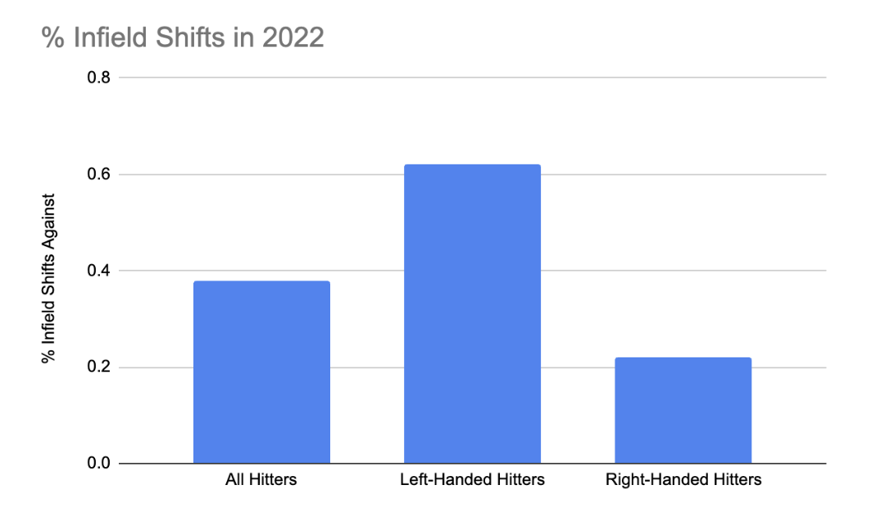
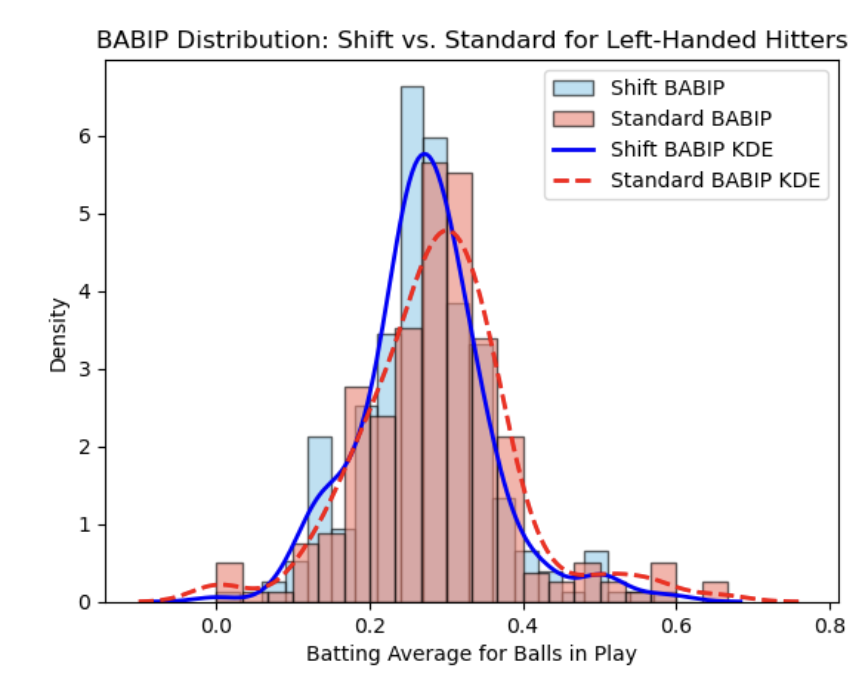
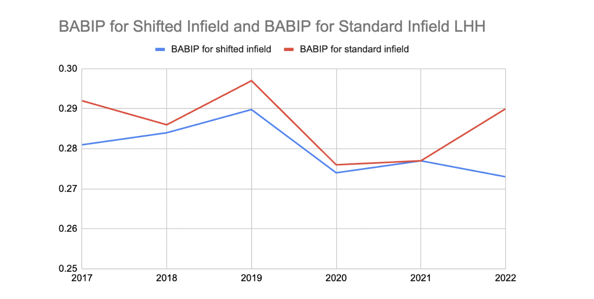
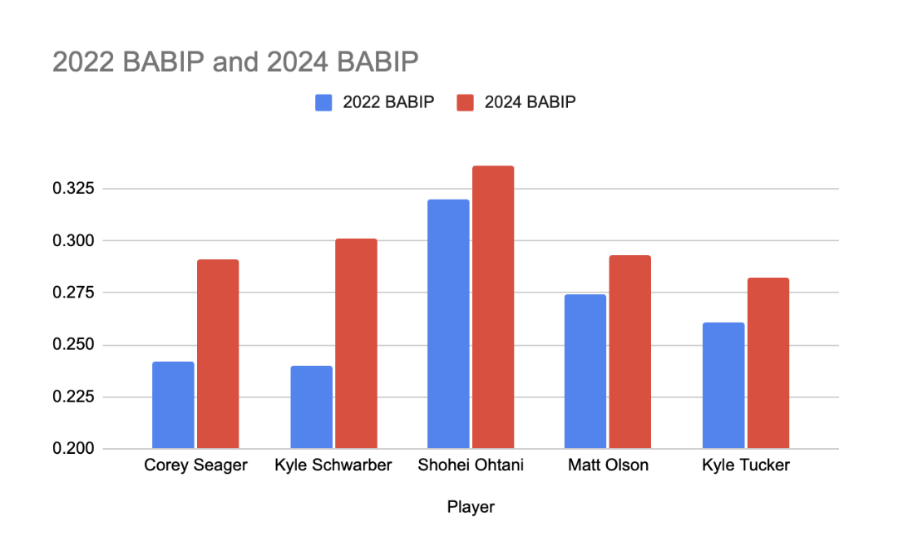

Lefties Back in Swing: Breaking Down the Impact of Infield Defensive Shifts on MLB Batting Outcomes
By Madison Heath | December 31, 2024
Introduction
Major League Baseball has long been a game of adjustments, and one of the most notable developments in the past decade has been the rise of defensive shifts. These strategic defensive alignments, where teams position fielders based on a hitter’s tendencies, significantly altered the dynamics of the game. In particular, left-handed hitters found themselves frequently targeted by these shifts, and many balls that would have otherwise been hits turned into outs. In 2023, MLB implemented a rule change limiting the use of infield defensive shifts, aiming to restore balance between offense and defense. This article will evaluate how defensive shifts have affected key batting metrics for left-handed hitters from the pre-shift era to the post-shift landscape after the rule change.
What is an Infield Defensive Shift, and Why? Defensive shifts weren’t always a common sight. But as analytics and data-driven decisions became prominent, teams noticed patterns in hitters’ tendencies to pull the ball toward one side. By definition, an infield shift is when at least three infielders are positioned to the same side of second base. Shifts were a calculated response, driven by data that highlighted exactly where hitters were likely to send the ball, allowing teams to position their fielders accordingly. For example, if the defense knew a left-handed hitter had a tendency of pulling the ball to the right side of second base or up the middle, they may shift to having three infielders on the right side of second base.

Standard Defense (left) vs Shifted Defense (right)
2023 Rule Change
The shift restriction, introduced in 2023, states that all four infielders must be in the infield when the ball is pitched, with two completely on either side of second base. Infielders also must stay on their side of second base and not switch with other players. The goal of this rule was to give hitters more freedom to hit ground balls without worrying about an imbalanced defense.
A Look at 2022
Because the rule change prohibiting infield defensive shifts occurred in 2023, it is only fitting to look at the most recent year shifts were allowed, 2022. The following bar chart illustrates the percentage of infield defensive shifts for each at bat in 2022.
In the 2022 season, MLB teams employed infield shifts in 38% of all plate appearances, with left-handed hitters facing the shift on 62% of their plate appearances and right-handed hitters on just 22%. This visualization illustrates the striking disparity in shift usage between left- and right-handed hitters, reflecting how much more common it was to stack defenders on the right side of the infield against lefties.
The Effect of Shifts on Batting Average on Balls in Play (BABIP)
To better understand the impact of shifts on hitting outcomes, let’s examine the distribution of Batting Average on Balls in Play (BABIP) for left-handed hitters when facing a shift versus a standard defense. BABIP is a valuable metric for evaluating whether a hitter’s balls in play are translating into hits.
In this histogram, which represents data from the 2022 MLB season, the BABIP for left-handed hitters facing standard defenses is higher than those facing shifted defenses, indicating that the shift has been effective in reducing hits on balls in play. The mean BABIP for left-handed hitters facing standard defenses is 0.290 while the mean BABIP for left-handed hitters facing shift defenses is 0.273.
This hasn’t just been the case in 2022. Defensive shifts have affected left-handed hitters’ BABIP statistics for many years prior. Historically, BABIP was lower for shifted defenses, particularly for left-handed hitters, as defenders were positioned to intercept pulled ground balls and line drives.
This graph highlights how BABIP for left-handed hitters facing shifts has consistently been lower than for those facing standard defenses, with a significant drop beginning around 2021 and widening further in 2022. This widening BABIP gap with the growing prevalence of shifts prompted MLB to introduce shift restrictions in 2023 to mitigate the effect on left-handed batters and boost offensive balance in the game.
The Most Recent Season: A Look at 2024
To evaluate the effect of the shift rule change on individual hitters, let’s profile five of the most frequently shifted hitters in 2022 and compare their BABIP in 2022 (with shifts) versus 2024 (without shifts).
This chart highlights how all five left-handed batters, previously impacted by shifts in 2022, experienced increases in their BABIP in 2024, with Corey Seager and Kyle Schwarber showing the most striking improvements. Seager’s BABIP rose from 0.242 to 0.291, a nearly 20% increase, while Schwarber’s jumped from 0.240 to 0.301, a whopping 25% gain. These improvements indicate that the restriction of infield shifts allowed hitters to achieve better outcomes on balls in play.
Conclusion
The restriction of defensive shifts has already had a tangible impact on batting outcomes for left-handed hitters, increasing BABIP and restoring some offensive balance to the game. For hitters who faced shifts in a majority of their plate appearances in previous seasons, the rule change has opened up opportunities to turn ground balls into hits, a shift in momentum that reflects MLB’s goal to enhance offensive engagement and balance within the sport. In seasons to come, it will be essential to monitor these metrics further to understand the long-term impact of shift restrictions on MLB’s landscape. For now, left-handed hitters are back in the swing of things, finding new success in an era where the defense can no longer stack the odds so heavily against them.